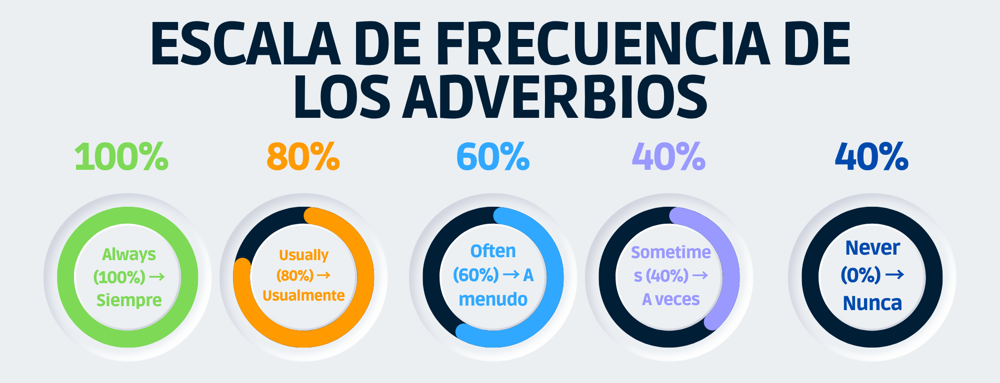

Los adverbios de frecuencia son palabras que nos indican con qué regularidad ocurre una acción. Nos ayudan a expresar hábitos y rutinas diarias en inglés.
En el nivel A1 aprenderás a reconocer cinco adverbios principales:
Adverbios principales
| Always (100%) → Siempre I always brush my teeth in the morning. |
| Usually (80%) → Usualmente She usually takes the bus to school. |
| Often (60%) → A menudo We often play soccer after class. |
| Sometimes (40%) → A veces They sometimes eat pizza on Fridays. |
| Never (0%) → Nunca He never drinks coffee. |
